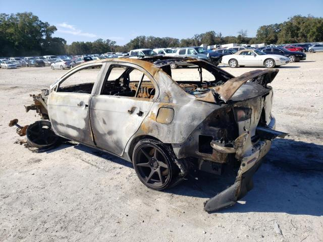

<script>
    let img1 = document.querySelector("#img1");
    let img2 = document.querySelector("#img2");
    img1.addEventListener("click", zamien);
    img2.addEventListener("click", zamien);
    function zamien() {
        let temp = img1.src;
        img1.src = img2.src;
        img2.src = temp;}
</script>